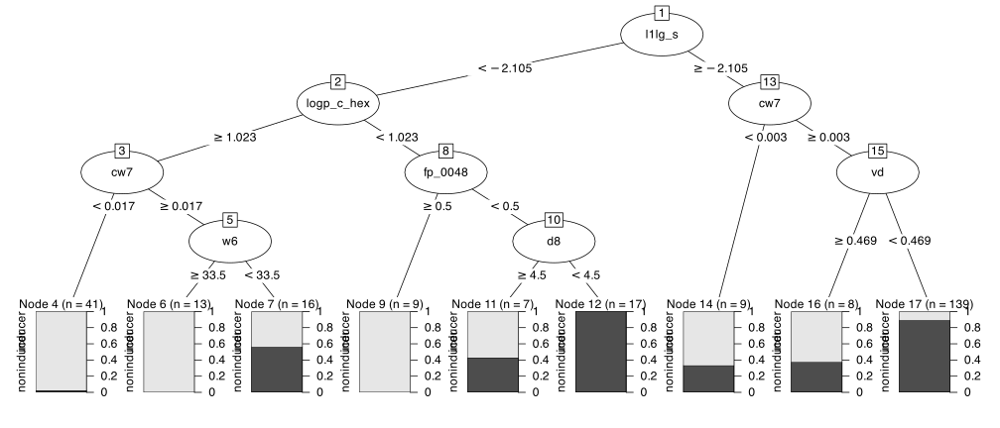

req_pkg <- c("bestNormalize", "future.mirai", "janitor", "kernlab", "partykit",
"QSARdata", "ranger", "rpart", "tidymodels")
# Check to see if they are installed:
pkg_installed <- vapply(req_pkg, rlang::is_installed, logical(1))
# Install missing packages:
if ( any(!pkg_installed) ) {
install_list <- names(pkg_installed)[!pkg_installed]
pak::pak(install_list)
}
# For coliono, install from GitHub
pak::pak("stevenpawley/colino")13 Feature Selection
The book’s Feature Selection chapter focuses on different methods to reduce the number of predictors used by the model
13.1 Requirements
We will use the following package in this chapter: You’ll need 9 packages (bestNormalize, future.mirai, janitor, kernlab, partykit, QSARdata, ranger, rpart, and tidymodels) for this chapter. You can install them via:. To install them:
We’ll demonstrate these tools using the phospholipidosis (PLD) data set from the QSARdata package. These data are an example of a data set used in drug discovery to help predict when compounds have unwanted side effects (e.g., toxicity).
We’ll consider two predictor sets. One consists of a series of descriptors of molecules (such as size or weight) and a set of predictors that are binary indicators for important sub-structures in the equations that make up the molecules. The response has two classes (“clean” and toxic outcomes).
Even before initial splitting, there are more predictors (1345) than data points (324), making feature selection an essential task for these data.
Let’s load the meta package, manage some between-package function conflicts, and initialize parallel processing:
library(tidymodels)
library(colino)
library(bestNormalize)
library(future.mirai)
library(janitor)
tidymodels_prefer()
theme_set(theme_bw())
plan(mirai_multisession)There are a few different data frames for these data. We’ll merge two and clean up and shorten the variable names, use a 4:1 split of the data, and then initialize multiple repeats of 10-fold cross-validation:
data(PLD, package = "QSARdata")
drug_data <-
# Merge the outcome data with a subset of possible predictors.
PLD_Outcome %>%
full_join(PLD_VolSurfPlus, by = "Molecule") %>%
full_join(PLD_PipelinePilot_FP %>% select(1, contains("FCFP")),
by = "Molecule") %>%
select(-Molecule) %>%
clean_names() %>%
as_tibble() %>%
# Make shorter names:
rename_with(~ gsub("vol_surf_plus_", "", .x), everything()) %>%
rename_with(~ gsub("ppfp_fcfp_", "fp_", .x), everything())
set.seed(106)
drug_split <- initial_split(drug_data, prop = 0.8, strata = class)
drug_train <- training(drug_split)
drug_test <- testing(drug_split)
drug_rs <- vfold_cv(drug_train, repeats = 10, strata = class)There is a class imbalance for these data:
The level “inducer” indicates that the molecule has been proven to cause phospholipidosis.
13.2 Unsupervised Selection
In tidymodels, most preprocessing methods for feature selection are recipe steps.
There are several unsupervised feature filters in recipes:
-
step_zv(): Removes predictors with a single value. -
step_nzv(freq_cut = double(1), unique_cut = double(1)): Removes predictors that have a few unique values that are out of the mainstream. -
step_corr(threshold = double(1)): Reduces the pairwise correlations between predictors. -
step_lincomb(): Eliminates strict linear dependencies between predictors. -
step_filter_missing(threshold = double(1)): Remove predictors that have too many missing values.
The textrecipes package also has a few unsupervised methods for screening tokens (i.e., words):
-
step_tokenfilter(): filter tokens based on term frequency. -
step_stopwords(): Removes top words (e.g., “and”, “or”, etc.) -
step_pos_filter(): Part of speech filtering of tokens.
It is suggested that these steps occur early in a recipe, perhaps after any imputation methods.
We suggest adding these to a recipe early, after any imputation methods.
For the drug toxicity data, we can visualize the amount of predictor correlations by first computing the correlation matrix:
Note the warning: some columns have a single unique value. Let’s look at this across the entire set of predictors via a function in the vctrs package:
num_unique <- map_int(drug_train %>% select(-class), vctrs::vec_unique_count)
names(num_unique)[num_unique == 1]
#> [1] "fp_0167" "fp_0172" "fp_0174" "fp_0178" "fp_0181" "fp_0182" "fp_0183" "fp_0191"
#> [9] "fp_0193" "fp_0195" "fp_0198" "fp_0200" "fp_0204" "fp_0205" "fp_0206" "fp_0212"We’ll start a recipe with the step that will eliminate these:
drug_rec <-
recipe(class ~ ., data = drug_train) %>%
step_zv(all_predictors())Returning to correlations, let’s plot the distribution of pairwise correlation between predictors:
pairwise_cor <- cor_mat[upper.tri(cor_mat)]
sum(abs(pairwise_cor) >= 3 / 4, na.rm = TRUE)
#> [1] 3922
tibble(correlation = pairwise_cor) %>%
filter(!is.na(correlation)) %>%
ggplot(aes(x = correlation)) +
geom_histogram(binwidth = 0.1, col = "white")This isn’t too bad, but if we wanted to reduce the extreme pairwise correlations, we could use:
drug_rec %>%
step_corr(all_predictors(), threshold = 0.75)
#>
#> ── Recipe ───────────────────────────────────────────────────────────────────────────
#>
#> ── Inputs
#> Number of variables by role
#> outcome: 1
#> predictor: 1345
#>
#> ── Operations
#> • Zero variance filter on: all_predictors()
#> • Correlation filter on: all_predictors()or search for an optimal cutoff using threshold = tune() (as we will below).
13.3 Automatic Selection
The text mentioned that there are types of models that automatically select predictors. Tree-based models typically fall into this category.
To demonstrate, let’s fit a Classification and Regression Tree (CART) to the training set and see how many predictors are removed.
Before doing so, let’s turn off a feature of this model. CART computes special alternate splits during training (“surrogate” and “competing” splits) to aid with things like missing value imputation. We’ll use the built-in feature importance measure to see how many predictors were used. Unfortunately, those measures will include splits not actually used by the model, so we prohibit these from being listed using rpart.control().
We can pass that to the model fit when we set the engine:
cart_ctrl <- rpart::rpart.control(maxcompete = 0, maxsurrogate = 0)
cart_spec <-
decision_tree(mode = "classification") %>%
set_engine("rpart", control = !!cart_ctrl)Note the use of !! (“bang-bang”) when adding cart_ctrl as an engine option. If we had just used control = cart_ctrl, it tells R to look for a reference to object “cart_ctrl”, which resides in the global environment. Ordinarily, that works fine. However, if we use parallel processing, that reference is not available to the worker processes, and an error will occur.
Using the bang-bang operator, we replace the reference to “cart_ctrl” with the actual value of that object. It splices the actual data into the model specification so parallel workers can find it. Here’s the model fit:
cart_drug_fit <- cart_spec %>% fit(class ~ ., data = drug_train)
cart_drug_fit
#> parsnip model object
#>
#> n= 259
#>
#> node), split, n, loss, yval, (yprob)
#> * denotes terminal node
#>
#> 1) root 259 99 noninducer (0.38224 0.61776)
#> 2) l1lg_s< -2.105 103 30 inducer (0.70874 0.29126)
#> 4) logp_c_hex>=1.023 70 10 inducer (0.85714 0.14286)
#> 8) cw7< 0.01674 41 1 inducer (0.97561 0.02439) *
#> 9) cw7>=0.01674 29 9 inducer (0.68966 0.31034)
#> 18) w6>=33.5 13 0 inducer (1.00000 0.00000) *
#> 19) w6< 33.5 16 7 noninducer (0.43750 0.56250) *
#> 5) logp_c_hex< 1.023 33 13 noninducer (0.39394 0.60606)
#> 10) fp_0048>=0.5 9 0 inducer (1.00000 0.00000) *
#> 11) fp_0048< 0.5 24 4 noninducer (0.16667 0.83333)
#> 22) d8>=4.5 7 3 inducer (0.57143 0.42857) *
#> 23) d8< 4.5 17 0 noninducer (0.00000 1.00000) *
#> 3) l1lg_s>=-2.105 156 26 noninducer (0.16667 0.83333)
#> 6) cw7< 0.002635 9 3 inducer (0.66667 0.33333) *
#> 7) cw7>=0.002635 147 20 noninducer (0.13605 0.86395)
#> 14) vd>=0.4691 8 3 inducer (0.62500 0.37500) *
#> 15) vd< 0.4691 139 15 noninducer (0.10791 0.89209) *Of the 1345 predictors, only 7 were actually part of the prediction equations. The partykit package has a nice plot method to visualize the tree:
library(partykit)
cart_drug_party <-
cart_drug_fit %>%
extract_fit_engine() %>%
as.party()
plot(cart_drug_party)
As previously mentioned, trees produced by the rpart package have an internal importance score. To return this, let’s write a small function to pull the rpart object out, extract the importance scores, and then return a data frame with that data:
get_active_features <- function(x) {
require(tidymodels)
x %>%
extract_fit_engine() %>%
pluck("variable.importance") %>%
enframe() %>%
setNames(c("predictor", "importance"))
}
get_active_features(cart_drug_fit)
#> # A tibble: 7 × 2
#> predictor importance
#> <chr> <dbl>
#> 1 l1lg_s 36.46
#> 2 logp_c_hex 9.624
#> 3 fp_0048 9.091
#> 4 cw7 7.553
#> 5 w6 4.539
#> 6 vd 4.045
#> # ℹ 1 more rowThis shows us the 7 predictors used, along with their relative effect on the model.
These results show what happens with the training set, but would a predictor like l1lg_s be consistently selected?
To determine this, we can resample the model and save the importance scores for each of the 100 analysis sets. Let’s take the get_active_features() function and add it to a different control function that will be executed during resampling:
ctrl <- control_resamples(extract = get_active_features)
cart_drug_res <-
cart_spec %>%
fit_resamples(
class ~ .,
resamples = drug_rs,
control = ctrl
)Our results will have an extra column called .extract that contains the results for the resample. Since we didn’t tune this model, .extract contains a simple tibble with the results:
cart_drug_res$.extracts[[1]]
#> # A tibble: 1 × 2
#> .extracts .config
#> <list> <chr>
#> 1 <tibble [7 × 2]> Preprocessor1_Model1
cart_drug_res$.extracts[[1]]$.extracts
#> [[1]]
#> # A tibble: 7 × 2
#> predictor importance
#> <chr> <dbl>
#> 1 vd 35.40
#> 2 logp_c_hex 9.001
#> 3 l1lg_s 7.934
#> 4 aus74 3.75
#> 5 cw1 3.438
#> 6 fp_0027 3.048
#> # ℹ 1 more rowWe can extract the results from all the resamples, unnest, and count the number of times each predictor was selected:
A visualization illustrates that a small number of predictors were reliably selected:
resampled_selection %>%
ggplot(aes(n)) +
geom_histogram(binwidth = 2, col = "white") +
labs(x = "# Times Selected (of 100)")We can also see the model’s performance characteristics:
collect_metrics(cart_drug_res)
#> # A tibble: 3 × 6
#> .metric .estimator mean n std_err .config
#> <chr> <chr> <dbl> <int> <dbl> <chr>
#> 1 accuracy binary 0.7406 100 0.007049 Preprocessor1_Model1
#> 2 brier_class binary 0.2001 100 0.005307 Preprocessor1_Model1
#> 3 roc_auc binary 0.7559 100 0.008105 Preprocessor1_Model1One additional note about using tree-based models to automatically select predictors. Many tree ensembles create a collection of individual tree models. For ensembles to work well, this collection should have a diverse set of trees (rather than those with the same splits). To encourage diversity, many tree models have an mtry parameter. This parameter is an integer for the number of predictors in the data set that should be randomly selected when making a split. For example, if mtry = 3, a different random selection of three predictors would be the only ones considered for each split in the tree. This facilitates diversity but also forces irrelevant predictors to be included in the model.
However, this also means that many tree ensembles will have prediction functions that include predictors that have no effect. If we take the same strategy as above, we will vastly overestimate the number of predictors that affect the model.
For this reason, we might consider setting mtry to use the complete predictor set during splitting if we are trying to select predictors. While this might slightly decrease the model’s performance, the false positive rate of finding “important predictors” will be significantly reduced.
13.4 Wrapper Methods
tidymodels does not contain any wrapper methods, primarily due to their computational costs.
Several other packages do, most notably caret. For more information on what that package can do, see the feature selection chapters of the documentation:
- Feature Selection Overview
- Feature Selection using Univariate Filters
- Recursive Feature Elimination
- Feature Selection using Genetic Algorithms
- Feature Selection using Simulated Annealing
R code from the Feature Engineering and Selection book can also be found at https://github.com/topepo/FES.
13.5 Filter Methods
Currently, the majority of supervised filters live in the colino package (although this will change in the Autumn of 2025). Those steps include:
-
step_select_aov(): filter categorical predictors using the ANOVA F-test. -
step_select_boruta(): feature selection step using the Boruta algorithm (pdf). -
step_select_carscore(): feature selection step using CAR scores. -
step_select_fcbf(): fast correlation-based filter. -
step_select_forests(): feature selection step using random forest feature importance scores. -
step_select_infgain(): information gain feature selection step. -
step_select_linear(): feature selection step using the magnitude of a linear models’ coefficients. -
step_select_mrmr(): apply minimum redundancy maximum relevance feature selection (MRMR). -
step_select_relief(): feature selection step using the Relief algorithm. -
step_select_roc(): filter numeric predictors using ROC curve. -
step_select_tree(): feature selection step using a decision tree importance scores. -
step_select_vip(): feature selection step using a model’s feature importance scores or coefficients. -
step_select_xtab(): filter categorical predictors using contingency tables.
These steps contain tuning parameters that control how many predictors to retain:
-
top_nspecifies the number to retain while -
thresholddescribes the cut-point for the metric being used to filter
Let’s add a supervised filter based on the popular random forest importance scores to demonstrate. The step requires a model declaration via a parsnip specification. We’ll choose random forest model and optimize the number of top predictors that should be retained and then given to the model.
base_model <-
rand_forest(trees = 1000, mode = "classification") %>%
set_engine("ranger", importance = "permutation")
drug_rec <-
recipe(class ~ ., data = drug_train) %>%
step_zv(all_predictors(), id = "zv") %>%
step_corr(all_numeric_predictors(), threshold = tune(), id = "cor") %>%
step_select_vip(
all_numeric_predictors(),
outcome = "class",
model = base_model,
top_p = tune(),
id = "vip"
) %>%
step_orderNorm(all_numeric_predictors())Note that we also add a correlation filter and optimize the exclusion threshold. This helps the random forest model since the inclusion of highly correlated predictors can dilute the importance of the set of related predictors.
We’ll fit a support vector machine model to these data, so the recipe concludes with a step that will normalize the features to have the same distribution (even the binary values).
Now we can specify the supervised model, tag two parameters for optimization, and then add the model and recipe to a workflow:
svm_spec <-
svm_rbf(cost = tune(), rbf_sigma = tune()) %>%
set_mode("classification")
vip_svm_wflow <- workflow(drug_rec, svm_spec)Let’s add specific ranges for the supervised filter parameter since its upper range depends on the data dimensions. We’re not sure how many predictors will pass the unsupervised filter steps, but we’ll guess that we should include, at most, 100 predictors. If we overestimate this number, step_select_vip() will adjust the range to the upper limit.
We’ll also adjust the range of the correlation filter to make it more aggressively remove highly correlated predictors:
Finally, let’s tune the model via Bayesian optimization and use the Brier score to guide the process to the best values of the tuning parameters:
ctrl <- control_bayes(no_improve = Inf, parallel_over = "everything")
vip_svm_res <-
vip_svm_wflow %>%
tune_bayes(
resamples = drug_rs,
metrics = metric_set(brier_class, roc_auc),
initial = 10L,
iter = 25L,
control = ctrl,
param_info = vip_svm_param
)A visualization of the process shows that the search does reduce the Brier score during the search:
autoplot(vip_svm_res, metric = "brier_class", type = "performance")When we plot the parameter choices over iterations, we see that each tuning parameter converges to specific ranges. The number of predictors retained fluctuates, and a few choices could be used (say, between 5 and 15 predictors).
autoplot(vip_svm_res, type = "parameters")A plot of the parameter values versus the Brier score tells a similar story:
autoplot(vip_svm_res, metric = "brier_class")The numerically best results are:
show_best(vip_svm_res, metric = "brier_class")
#> # A tibble: 5 × 11
#> cost rbf_sigma threshold top_p .metric .estimator mean n std_err .config
#> <dbl> <dbl> <dbl> <int> <chr> <chr> <dbl> <int> <dbl> <chr>
#> 1 30.67 0.0005070 0.9665 35 brier_cl… binary 0.1331 100 0.003508 Iter10
#> 2 29.89 0.001532 0.9811 75 brier_cl… binary 0.1349 100 0.003652 Iter11
#> 3 27.73 0.0002266 0.8979 50 brier_cl… binary 0.1357 100 0.003505 Iter24
#> 4 23.13 0.0003069 0.8237 38 brier_cl… binary 0.1359 100 0.003820 Iter15
#> 5 23.82 0.0008604 0.9667 80 brier_cl… binary 0.1382 100 0.003489 Iter12
#> # ℹ 1 more variable: .iter <int>
best_param <- select_best(vip_svm_res, metric = "brier_class")Let’s update our workflow with the best parameters, then fit the final model on the entire training set:
set.seed(124)
final_model <-
vip_svm_wflow %>%
finalize_workflow(best_param) %>%
fit(drug_train)
final_model
#> ══ Workflow [trained] ═══════════════════════════════════════════════════════════════
#> Preprocessor: Recipe
#> Model: svm_rbf()
#>
#> ── Preprocessor ─────────────────────────────────────────────────────────────────────
#> 4 Recipe Steps
#>
#> • step_zv()
#> • step_corr()
#> • step_select_vip()
#> • step_orderNorm()
#>
#> ── Model ────────────────────────────────────────────────────────────────────────────
#> Support Vector Machine object of class "ksvm"
#>
#> SV type: C-svc (classification)
#> parameter : cost C = 30.6666439770923
#>
#> Gaussian Radial Basis kernel function.
#> Hyperparameter : sigma = 0.000507017083942551
#>
#> Number of Support Vectors : 126
#>
#> Objective Function Value : -3333
#> Training error : 0.142857
#> Probability model included.How many predictors were removed, and how many made it to the final model? We can write a function to use the tidy() method on the recipe steps to assess what was eliminated. The “mold” for the workflow can also tell us how many predictors were passed to the SVM model:
get_filter_info <- function(x) {
fit_rec <- extract_recipe(x)
# The tidy methods show the predictors that were eliminated:
corr_rm <- nrow(tidy(fit_rec, id = "cor"))
zv_rm <- nrow(tidy(fit_rec, id = "zv"))
vip_rm <- nrow(tidy(fit_rec, id = "vip"))
# The mold has a 'predictors' element that describes the
# columns which are given to the model:
kept <-
x %>%
extract_mold() %>%
pluck("predictors") %>%
ncol()
# We'll save them as a tibble:
tibble(corr_rm, zv_rm, vip_rm, kept)
}
get_filter_info(final_model)
#> # A tibble: 1 × 4
#> corr_rm zv_rm vip_rm kept
#> <int> <int> <int> <int>
#> 1 682 16 612 35The correlation filter removes a large number of predictors, which is not surprising for this type of data set.
How does the model work on the test set of 65 molecules?
test_pred <- augment(final_model, drug_test)
test_pred %>% brier_class(class, .pred_inducer)
#> # A tibble: 1 × 3
#> .metric .estimator .estimate
#> <chr> <chr> <dbl>
#> 1 brier_class binary 0.1178
test_pred %>% roc_auc(class, .pred_inducer)
#> # A tibble: 1 × 3
#> .metric .estimator .estimate
#> <chr> <chr> <dbl>
#> 1 roc_auc binary 0.899